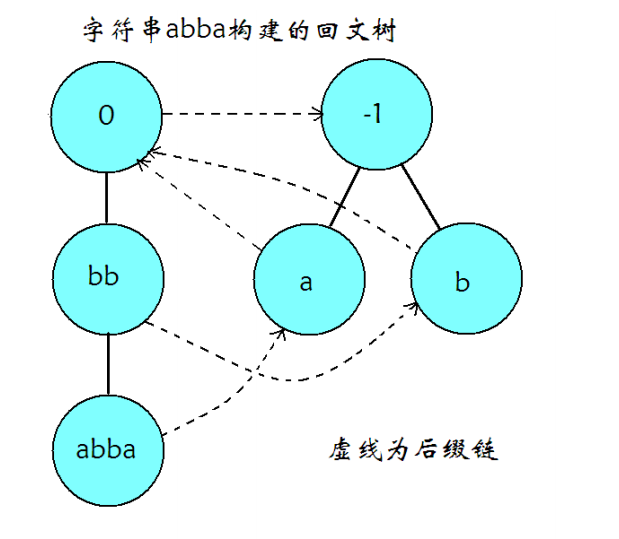
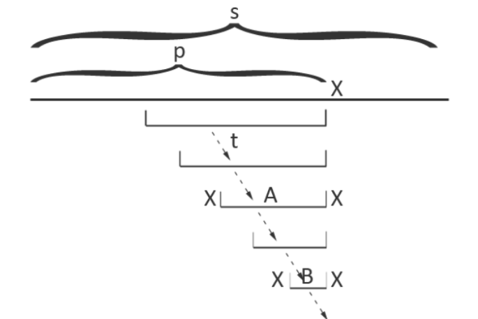
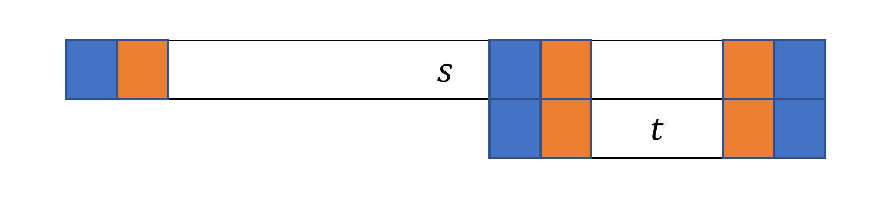
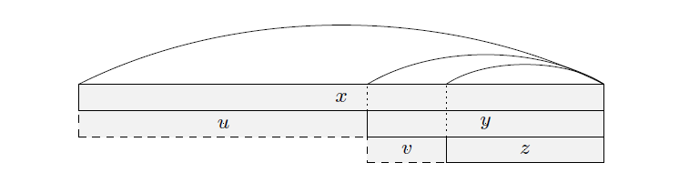
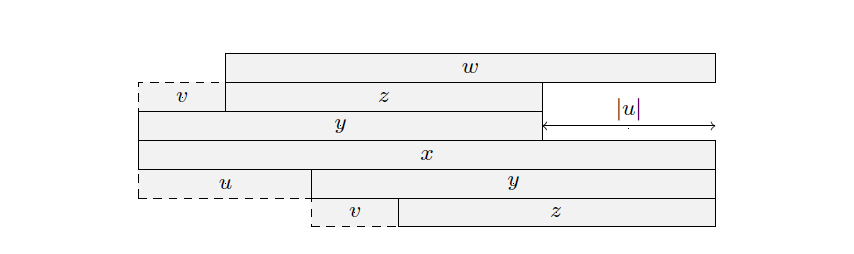
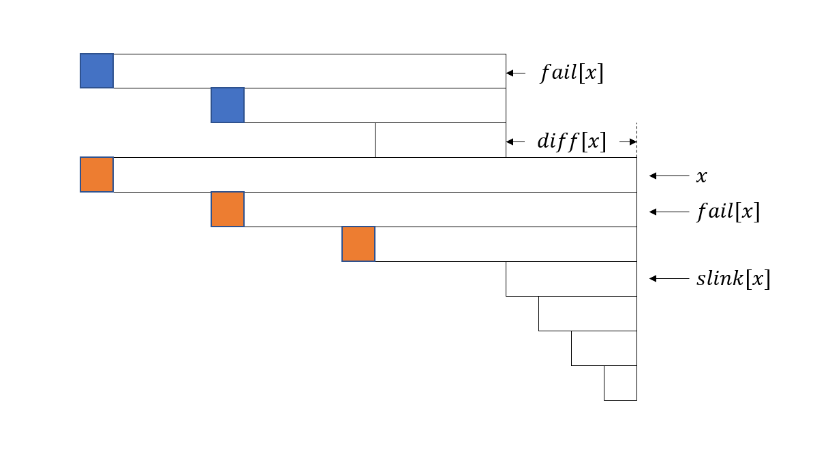

OI Wiki · prijevod · StringoviOI Wiki · translation · Strings
Palindromsko stabloPalindromic tree
Sadržaj
Definicija
Palindromsko stablo (EER Tree, palindromic tree, također poznato kao palindromski automat) učinkovita je struktura podataka za pohranu svih palindromskih podstringova stringa. Prvi su ga objavili Mikhail Rubinchik i Arseny M. Shur 2015. godine. Nadahnuto je strukturama za sufikse stringova poput sufiksnog stabla te omogućuje jednostavno i učinkovito rješavanje niza problema s palindromima.
Struktura
Palindromsko stablo otprilike izgleda ovako:

Poput drugih automata, palindromsko stablo sastoji se od prijelaznih bridova i sufiksnih veza (pokazivača fail), a svaki čvor može predstavljati palindromski podstring.
Palindromi mogu imati neparnu ili parnu duljinu. Kao u Manacherovu algoritmu, mogli bismo umetnuti znak izvan abecede, primjerice '#', kao separator da sve duljine palindroma postanu neparne, ali to je nespretno. Postoji li bolji način?
Naravno da postoji. Izgradimo dva stabla: čvorovi jednog predstavljaju palindromske podstringove neparne duljine, a čvorovi drugog palindromske podstringove parne duljine.
Kao u drugim automatima, pokazivač fail čvora pokazuje na čvor koji predstavlja najdulji palindromski sufiks njegova palindroma. No prijelazni brid ne dodaje znak samo na kraj: on dodaje jednak znak na oba kraja izvornog palindroma (što je prirodno jer pohranjeni string mora ostati palindrom).
U svakom čvoru održavamo i duljinu len njegova palindromskog podstringa. Taj podatak omogućuje jednostavnu izgradnju palindromskog stabla.
Izgradnja
Palindromsko stablo ima dva početna stanja koja predstavljaju palindrome duljina \(-1,0\), a zovemo ih neparnim i parnim korijenom. Ne predstavljaju stvarne stringove, nego služe samo kao početna stanja, slično korijenima drugih automata.
Pokazivač fail parnog korijena pokazuje na neparni korijen. Pokazivač fail neparnog korijena nije nam važan jer u neparnom korijenu podudaranje ne može izostati (sljedeći prijelaz vodi u stanje duljine \(1\), odnosno jedan znak, koji je uvijek palindromski podstring).
Kao i sufiksni automat, palindromsko stablo gradimo inkrementalno.
Pretpostavimo da smo izgradili stablo za prvih \(p-1\) znakova, a sada dodajemo znak s pozicije \(p\) izvornog stringa.
Krećemo od čvora najduljeg palindromskog podstringa koji završava prethodnim znakom. Slijedimo pokazivače fail dok ne dođemo do čvora za koji vrijedi \(s_{p}=s_{p-len-1}\), odnosno znak ispred njegova palindroma jednak je znaku koji dodajemo.
Slijedi slika iz izvornog rada:

Slijedeći pokazivače fail pronalazimo čvor za A. Dodavanjem X na oba kraja dobivamo trenutačni palindrom, XAX. Očito je to čvor stabla za najdulji palindromski podstring koji završava na \(p\). (Ovdje se vidi prednost čvora duljine \(-1\): ako se nijedan X ne podudara, uvjet postaje \(s_p=s_p\) na istoj poziciji i prirodno dobivamo čvor za znak X.) Ako taj čvor ne postoji, stvorimo ga.
Zatim izračunamo pokazivač fail novog čvora. Postupak je sličan: krećući od A, slijedimo pokazivače fail da pronađemo XBX, najdulji palindromski sufiks stringa XAX, i postavimo pokazivač fail na njegov čvor.
Taj čvor ne treba stvarati. Prvih \(len_B\) i posljednjih \(len_B\) znakova stringa A jednaki su i čine B. Prema simetriji palindroma, prvih \(len_B\) znakova s obje strane okruženo je znakom X; zadnji je znak zadan kao X. Zato čvor XBX sigurno već postoji.
Ako za fail ne pronađemo podudaranje, povežemo ga s čvorom duljine \(0\). To je ispravno jer je on sufiks svakog čvora.
Dokaz linearnog broja stanja
Teorem
String \(s\) ima najviše \(|s|\) različitih palindromskih podstringova.
Dokaz
Koristimo matematičku indukciju.
-
Ako je \(|s| =1\), \(s\) ima jedan znak i samo jedan podstring, koji je palindrom. Tvrdnja stoga vrijedi.
-
Ako je \(|s| >1\), neka je \(t=sc\), gdje je \(t\) string dobiven iz stringa \(s\) dodavanjem znaka \(c\) na kraj, i pretpostavimo da tvrdnja vrijedi za \(s\). Promotrimo palindromske podstringove koji završavaju posljednjim znakom \(c\), s lijevim krajevima poredanima rastuće kao \(l_1,l_2,\dots,l_k\). Budući da je \(t[l_1..|t|]\) palindrom, za svaku poziciju \(l_1 \le p \le |t|\) vrijedi \(t[p..|t|]=t[l_1..l_1+|t|-p]\). Zato se za \(1 < i \le k\) podstring \(t[l_i..|t|]\) već pojavio u \(t[1..|t|-1]\). Dodavanje jednog znaka stoga povećava broj različitih palindromskih podstringova najviše za \(1\).
Teorem slijedi matematičkom indukcijom.
Zato palindromsko stablo ima \(O(|s|)\) stanja. Svako stanje predstavlja točno jedan različit palindromski podstring, pa je stanje iz kojeg dolazi prijelaz u njega jedinstveno. Zbog toga je i ukupan broj prijelaza \(O(|s|)\).
Dokaz ispravnosti
Na prethodnoj slici dodajemo trenutačni znak X. Prema dokazu linearnog broja stanja dovoljno je pronaći najdulji palindromski sufiks koji sadrži posljednji X, odnosno XAX. Zatim pronalazimo njegov najdulji palindromski sufiks XBX i stvaramo sufiksnu vezu. Stanje za XBX već postoji u stablu. Palindromski sufiksi koji sadrže posljednji znak jesu XAX, sam XBX i svi preci njegova stanja u stablu fail veza.
Pri izgradnji palindromskog stabla stringa \(s\) neka je \(n=|s|\). Očito sve operacije osim slijeđenja pokazivača fail ukupno traju \(O(n)\).
Pri dodavanju znaka svaki skok pokazivačem fail mijenja dubinu trenutačnog čvora u stablu fail veza za \(-1\) u odnosu na prethodni korak. Povezivanje fail veze povećava dubinu samo za 1 (osim kad je fail \(0\), odnosno podudaranje postoji tek na \(-1\): tada u odnosu na \(-1\) dubina raste za \(+2\)).
Budući da dodajemo samo \(n\) znakova, dubina se povećava samo \(n\) puta, pa ima najviše \(2n\) skokova pokazivačem fail.
Zato je vremenska složenost izgradnje palindromskog stabla stringa \(s\) jednaka \(O(|s|)\).
Primjene
Broj različitih palindromskih podstringova
Iz dokaza linearnog broja stanja slijedi da je broj različitih palindromskih podstringova stringa jednak broju stanja njegova palindromskog stabla, bez neparnog i parnog korijena.
Broj pojavljivanja palindromskih podstringova
Izgradimo palindromsko stablo i brojimo pojavljivanja slično kao u sufiksnom automatu.
Tijekom izgradnje čvorovi se već umeću topološkim redoslijedom. Zato je dovoljno proći svim stanjima obrnutim redoslijedom i broj pojavljivanja svakog stanja dodati broju pojavljivanja stanja na koje pokazuje njegov fail.
Primjer: APIO2014: Palindromi
Vrijednost podstringa stringa \(s\) definiramo kao umnožak njegova broja pojavljivanja u \(s\) i njegove duljine. Za zadani string \(s\) pronađite najveću vrijednost među svim palindromskim podstringovima.
Referentni kôd
#include <algorithm>
#include <cstring>
#include <iostream>
#include <string>
using namespace std;
constexpr int MAXN = 300000 + 5;
namespace pam {
int sz, tot, last;
int cnt[MAXN], ch[MAXN][26], len[MAXN], fail[MAXN];
char s[MAXN];
int node(int l) { // Stvori novi čvor duljine l
sz++;
memset(ch[sz], 0, sizeof(ch[sz]));
len[sz] = l;
fail[sz] = cnt[sz] = 0;
return sz;
}
void clear() { // Inicijalizacija
sz = -1;
last = 0;
s[tot = 0] = '$';
node(0);
node(-1);
fail[0] = 1;
}
int getfail(int x) { // Pronađi palindromski sufiks
while (s[tot - len[x] - 1] != s[tot]) x = fail[x];
return x;
}
void insert(char c) { // Izgradnja stabla
s[++tot] = c;
int now = getfail(last);
if (!ch[now][c - 'a']) {
int x = node(len[now] + 2);
fail[x] = ch[getfail(fail[now])][c - 'a'];
ch[now][c - 'a'] = x;
}
last = ch[now][c - 'a'];
cnt[last]++;
}
long long solve() {
long long ans = 0;
for (int i = sz; i >= 0; i--) {
cnt[fail[i]] += cnt[i];
}
for (int i = 1; i <= sz; i++) { // Ažuriraj odgovor
ans = max(ans, 1ll * len[i] * cnt[i]);
}
return ans;
}
} // namespace pam
string s;
int main() {
cin.tie(nullptr)->sync_with_stdio(false);
pam::clear();
cin >> s;
for (int i = 0; i < s.size(); i++) {
pam::insert(s[i]);
}
cout << pam::solve() << '\n';
return 0;
}
Minimalna palindromska faktorizacija
Zadan je string \(s(1\le |s| \le 10^5)\). Pronađite najmanji \(k\) za koji postoje stringovi \(s_1,s_2,\dots,s_k\) takvi da je svaki \(s_i(1\le i \le k)\) palindrom, a spajanjem \(s_1,s_2, \dots ,s_k\) redom dobivamo \(s\).
Razmotrimo dinamičko programiranje. Neka \(dp[i]\) označava najmanji broj dijelova faktorizacije prefiksa stringa \(s\) duljine \(i\). Za prijelaz prolazimo svim palindromima koji završavaju na \(i\)-tom znaku:
String može imati \(O(n^2)\) palindromskih podstringova, pa ovaj algoritam traje \(O(n^2)\), što je neprihvatljivo. Za optimizaciju prijelaza dokazujemo sljedeće leme.
Za string \(s\) njegov prefiks duljine \(i\) označavamo s \(pre(s,i)\), a sufiks duljine \(i\) sa \(suf(s,i)\).
Period: ako je \(0< p \le |s|\) i vrijedi \(\forall 1 \le i \le |s|-p,s[i]=s[i+p]\), onda \(p\) zovemo periodom stringa \(s\).
Rub (border): ako je \(0 \le r < |s|\) i vrijedi \(pre(s,r)=suf(s,r)\), onda \(pre(s,r)\) zovemo rubom stringa \(s\).
Veza perioda i rubova: \(t\) je rub stringa \(s\) ako i samo ako je \(|s|-|t|\) period stringa \(s\).
Dokaz
Ako je \(t\) rub stringa \(s\), tada je \(pre(s,|t|)=suf(s,|t|)\), pa vrijedi \(\forall 1\le i \le |t|, s[i]=s[|s|-|t|+i]\). Zato je \(|s|-|t|\) period stringa \(s\).
Ako je \(|s|-|t|\) period stringa \(s\), tada vrijedi \(\forall 1 \le i \le |s|-(|s|-|t|)=|t|,s[i]=s[|s|-|t|+i]\). Zato je \(pre(s,|t|)=suf(s,|t|)\), pa je \(t\) rub stringa \(s\).
Lema 1
Neka je \(t\) sufiks palindroma \(s\). Tada je \(t\) rub stringa \(s\) ako i samo ako je \(t\) palindrom.
Dokaz
Za \(1 \le i \le |t|\), budući da su \(s\) i \(t\) palindromi, vrijedi \(s[i]=s[|s|-i+1]=s[|s|-|t|+i]\). Zato je \(t\) rub stringa \(s\).
Za \(1 \le i \le |t|\), budući da je \(t\) rub stringa \(s\), vrijedi \(s[i]=s[|s|-|t|+i]\). Budući da je \(s\) palindrom, vrijedi \(s[i]=s[|s|-i+1]\). Zato je \(s[|s|-i+1]=s[|s|-|t|+i]\), pa je \(t\) palindrom.
Na sljedećoj slici pozicije jednake boje sadrže jednake znakove.

Lema 2
Neka je \(t\) rub stringa \(s\) i vrijedi \(|s|\le 2|t|\). Tada je \(s\) palindrom ako i samo ako je \(t\) palindrom.
Dokaz
Ako je \(s\) palindrom, iz leme \(1\) slijedi da je i \(t\) palindrom.
Ako je \(t\) palindrom, budući da je \(t\) rub stringa \(s\), vrijedi \(\forall 1 \le i \le |t|, s[i]=s[|s|-|t|+i]=s[|s|-i+1]\). Budući da je \(|s| \le 2|t|\), i \(s\) je palindrom.
Lema 3
Ako je \(t\) rub palindroma \(s\), tada je \(|s|-|t|\) period stringa \(s\). Nadalje, \(|s|-|t|\) najmanji je period stringa \(s\) ako i samo ako je \(t\) najdulji pravi palindromski sufiks stringa \(s\).
Lema 4
Neka je \(x\) palindrom, \(y\) najdulji pravi palindromski sufiks stringa \(x\), a \(z\) najdulji pravi palindromski sufiks stringa \(y\). Neka su \(u,v\) stringovi za koje vrijedi \(x=uy,y=vz\). Tada vrijede sljedeća tri svojstva:
-
\(|u| \ge |v|\);
-
Ako je \(|u| > |v|\), tada je \(|u| > |z|\);
-
Ako je \(|u| = |v|\), tada je \(u=v\).

Dokaz
- Prema lemi \(3\), \(|u|=|x|-|y|\) najmanji je period stringa \(x\), a \(|v|=|y|-|z|\) najmanji period stringa \(y\). Pretpostavimo suprotno, \(|u| < |v|\). Budući da je \(y\) sufiks stringa \(x\), \(u\) je period i stringa \(x\) i stringa \(y\), što proturječi činjenici da je \(|v|\) najmanji period stringa \(y\). Zato je \(|u| \ge |v|\).
- Budući da je \(y\) rub stringa \(x\), \(v\) je prefiks stringa \(x\). Neka string \(w\) zadovoljava \(x=vw\) (kao na slici), pri čemu je \(z\) rub stringa \(w\). Pretpostavimo suprotno, \(|u| \le |z|\). Tada je \(|zu| \le 2|z|\), pa je prema lemi \(2\) string \(w\) palindrom. Prema lemi \(1\), \(w\) je rub stringa \(x\). Budući da je \(|u| > |v|\), vrijedi \(|w| > |y|\), što je proturječje. Zato je \(|u| > |z|\).
- Oba stringa \(u,v\) prefiksi su stringa \(x\) i vrijedi \(|u|=|v|\), pa je \(u=v\).

Korolar
Nakon što sve palindromske sufikse stringa \(s\) poredamo po duljini, njihove duljine možemo podijeliti u \(\log |s|\) aritmetičkih nizova.
Dokaz
Neka su duljine svih palindromskih sufiksa stringa \(s\), poredane rastuće, \(l_1,l_2,\dots,l_k\). Za svaki \(2 \le i \le k-1\), ako vrijedi \(l_{i}-l_{i-1}=l_{i+1}-l_{i}\), tada \(l_{i-1},l_{i},l_{i+1}\) čine aritmetički niz. Inače je \(l_{i}-l_{i-1}\neq l_{i+1}-l_{i}\). Prema lemi \(4\) vrijedi \(l_{i+1}-l_{i}>l_{i}-l_{i-1}\) i \(l_{i+1}-l_{i}>l_{i-1}\), pa je \(l_{i+1}>2l_{i-1}\). Dakle, kad se razlike duljina dvaju susjednih parova promijene, najveća je duljina više nego dvostruka u odnosu na najmanju. Udvostručenje se može dogoditi samo \(O(\log |s|)\) puta, pa se duljine palindromskih sufiksa stringa \(s\) mogu podijeliti u \(\log |s|\) aritmetičkih nizova.
Korolar se može dokazati i slabom lemom o periodičnosti: sve rubove najduljeg palindromskog sufiksa stringa \(s\) razvrstamo prema duljini \(x\), gdje je \(x \in [2^0,2^1),[2^1,2^2),\dots,[2^k,n)\), te promatramo najdulji rub u svakoj od tih \(\log |s|\) skupina. Detaljne dokaze donose Jin Ce u „Odabranim temama iz algoritama za stringove” i Chen Sunli u radu za nacionalni tim kandidata za IOI 2019. „Algoritmi za upite o periodima podstringova i njihove primjene”.
S tim zaključkom sada možemo optimizirati prijelaze za \(dp\).
Optimizacija
U svakom čvoru \(u\) palindromskog stabla održavamo još dvije vrijednosti, \(diff[u]\) i \(slink[u]\). Vrijednost \(diff[u]\) razlika je duljina palindroma koje predstavljaju čvorovi \(u\) i \(fail[u]\), odnosno \(len[u]-len[fail[u]]\). Vrijednost \(slink[u]\) dobivamo tako da od \(u\) slijedimo pokazivače fail do prvog čvora \(v\) za koji je \(diff[v] \neq diff[u]\), odnosno čvora najmanje duljine u aritmetičkom nizu kojem pripada \(u\).
Prema prethodno dokazanom zaključku, slijeđenje pokazivača \(slink\) prema gore zahtijeva samo \(O(\log |s|)\) skokova za svaki dodani znak. Zato zbroj vrijednosti \(dp\) svih palindroma predstavljenih jednim aritmetičkim nizom (u izvornom problemu \(\min\)) možemo pohraniti u čvoru najduljeg palindroma tog niza.
Neka \(g[v]\) za aritmetički niz kojem pripada \(v\) označava zbroj njegovih vrijednosti \(dp\), pri čemu je \(v\) njegov najdulji čvor. Tada je \(g[v]=\sum_{slink[x]=slink[v]} dp[i-len[x]]\), gdje je \(i\) trenutačni indeks.
Razmotrimo kako ažurirati polja \(g\) i \(dp\). Na sljedećoj slici pretpostavimo da obrađujemo \(i\)-ti znak, kojem u palindromskom stablu odgovara čvor \(x\). Vrijednost \(g[x]\) zbroj je vrijednosti \(dp\) na trima narančastim pozicijama (najkraći palindrom \(slink[x]\) pripada sljedećem aritmetičkom nizu). Prethodno pojavljivanje \(fail[x]\) nalazi se na \(i-diff[x]\) (završava na \(i-diff[x]\)), a \(g[fail[x]]\) sadrži vrijednosti \(dp\) na plavim pozicijama. Zato je \(g[x]\) jednak \(g[fail[x]]\) uvećanom za vrijednost \(dp\) na jednoj dodatnoj poziciji, \(i-(len[slink[x]]+diff[x])\). Na kraju s \(g[x]\) ažuriramo \(dp[i]\) i time dovršavamo doprinos tog aritmetičkog niza. Nastavljamo skakati na \(slink[x]\) i ponavljamo postupak. Implementacija se nalazi u kodu primjera.

Na kraju, ispravnost se oslanja na sljedeću činjenicu: ako \(x\) i \(fail[x]\) pripadaju istom aritmetičkom nizu, prethodno pojavljivanje \(fail[x]\) nalazi se na \(i-diff[x]\).
Dokaz
Prema lemi \(1\), \(fail[x]\) je rub stringa \(x\), pa se pojavljuje na \(i-diff[x]\).
Pretpostavimo da se \(fail[x]\) pojavljuje u intervalu \((i-diff[x],i)\) na poziciji \(j\). Budući da \(x\) i \(fail[x]\) pripadaju istom aritmetičkom nizu, vrijedi \(2|fail[x]| \ge x\). Dodatno pojavljivanje \(fail[x]\) preklapa se s pojavljivanjem na \(i-diff[x]\) stringa \(fail[x]\). Preklapanje označimo s \(w\) i neka string \(u\) zadovoljava \(uw=fail[x]\). Slično kao u lemi \(1\) možemo dokazati da je \(w\) palindrom i da je prefiks stringa \(x\), \(s[i-len[x]+1..j]=uwu\), također palindrom. To proturječi činjenici da je \(fail[x]\) najdulji palindromski prefiks (sufiks) stringa \(x\).
Primjer: Codeforces 932G Palindrome Partition
Zadan je string \(s\). Podijelite \(s\) na \(t_1, t_2, \dots, t_k\), pri čemu je \(k\) paran i vrijedi \(t_i=t_{k-i+1}\). Prebrojite takve podjele.
Rješenje
Konstruiramo \(t= s[0]s[n - 1]s[1]s[n - 2]s[2]s[n - 3] \dots s[n / 2 - 1]s[n / 2]\). Problem je ekvivalentan brojanju faktorizacija stringa \(t\) na palindrome parne duljine. Prethodne prijelaze zamijenimo zbrajanjem i polje \(dp\) ažuriramo samo na parnim pozicijama. Vremenska složenost jest \(O(n \log n)\), a prostorna \(O(n)\).
Referentni kôd
#include <cstring>
#include <iostream>
#include <string>
using namespace std;
using ll = long long;
constexpr int mod = 1e9 + 7;
constexpr int MAXN = 1000000 + 5;
int add(int x, int y) {
x += y;
return x >= mod ? x -= mod : x;
}
namespace pam {
int sz, tot, last;
int ch[MAXN][26], len[MAXN], fail[MAXN];
int cnt[MAXN], dep[MAXN], dif[MAXN], slink[MAXN];
char s[MAXN];
int node(int l) { // Stvori novi čvor duljine l
sz++;
memset(ch[sz], 0, sizeof(ch[sz]));
len[sz] = l;
fail[sz] = 0;
cnt[sz] = 0;
dep[sz] = 0;
return sz;
}
void clear() { // Inicijalizacija
sz = -1;
last = 0;
s[tot = 0] = '$';
node(0);
node(-1);
fail[0] = 1;
}
int getfail(int x) { // Pronađi palindromski sufiks
while (s[tot - len[x] - 1] != s[tot]) x = fail[x];
return x;
}
void insert(char c) { // Izgradnja stabla
s[++tot] = c;
int now = getfail(last);
if (!ch[now][c - 'a']) {
int x = node(len[now] + 2);
fail[x] = ch[getfail(fail[now])][c - 'a'];
dep[x] = dep[fail[x]] + 1;
ch[now][c - 'a'] = x;
dif[x] = len[x] - len[fail[x]];
if (dif[x] == dif[fail[x]])
slink[x] = slink[fail[x]];
else
slink[x] = fail[x];
}
last = ch[now][c - 'a'];
cnt[last]++;
}
} // namespace pam
using pam::dif;
using pam::fail;
using pam::len;
using pam::slink;
int n, dp[MAXN], g[MAXN];
string s;
char t[MAXN];
int main() {
cin.tie(nullptr)->sync_with_stdio(false);
pam::clear();
cin >> s;
n = s.size();
s = " " + s;
for (int i = 1, j = 0; i <= n; i++) t[++j] = s[i], t[++j] = s[n - i + 1];
dp[0] = 1;
for (int i = 1; i <= n; i++) {
pam::insert(t[i]);
for (int x = pam::last; x > 1; x = slink[x]) {
g[x] = dp[i - len[slink[x]] - dif[x]];
if (dif[x] == dif[fail[x]]) g[x] = add(g[x], g[fail[x]]);
if (i % 2 == 0) dp[i] = add(dp[i], g[x]); // Ažuriraj polje dp na parnim pozicijama
}
}
cout << dp[n];
return 0;
}
Primjeri zadataka
Povezani izvori
-
EERTREE: An Efficient Data Structure for Processing Palindromes in Strings
-
Weng Wentao, „Palindromska stabla i njihove primjene”, zbornik radova nacionalnog tima kandidata za IOI 2017.
-
Chen Sunli, „Algoritmi za upite o periodima podstringova i njihove primjene”, zbornik radova nacionalnog tima kandidata za IOI 2019.
-
Jin Ce, „Odabrane teme iz algoritama za stringove”.
-
A Subquadratic Algorithm for Minimum Palindromic Factorization
Contents
Definition
A palindromic tree (EER Tree, also called a palindromic automaton) is an efficient data structure for storing all palindromic substrings of a string. It was first published by Mikhail Rubinchik and Arseny M. Shur in 2015. Inspired by suffix-based string data structures such as suffix trees, it provides simple, efficient solutions to a range of problems involving palindromes.
Structure
A palindromic tree looks roughly like this:
Like other automata, a palindromic tree consists of transition edges and suffix links (fail pointers), and each node can represent a palindromic substring.
Palindromes can have odd or even lengths. As in Manacher's algorithm, we could insert a character outside the alphabet, such as '#', as a separator to make all palindrome lengths odd, but that is cumbersome. Is there a better way?
Of course there is. Build two trees: the nodes of one represent odd-length palindromic substrings, and the nodes of the other represent even-length palindromic substrings.
As in other automata, a node's fail pointer points to the node representing the longest palindromic suffix of its palindrome. A transition edge, however, does not append a character only at the end: it adds the same character to both ends of the original palindrome (which is natural, since the stored string must remain a palindrome).
At each node, also maintain the length len of its palindromic substring. This information makes the palindromic tree easy to construct.
Construction
A palindromic tree has two initial states, representing palindromes of lengths \(-1,0\), called the odd root and the even root. They do not represent actual strings and exist only as initial states, much like root nodes in other automata.
The even root's fail pointer points to the odd root. We do not care about the odd root's fail pointer because the odd root cannot fail to match (its next transition leads to a state of length \(1\), a single character, which is always a palindromic substring).
As with a suffix automaton, we construct the palindromic tree incrementally.
Suppose the tree for the first \(p-1\) characters has been built, and we now add the character at position \(p\) of the original string.
Start at the node for the longest palindromic substring ending at the previous character. Repeatedly follow fail pointers until reaching a node satisfying \(s_{p}=s_{p-len-1}\), meaning that the character preceding its palindrome equals the character being added.
Here is the figure from the paper:
Following fail pointers finds the node for A. Adding X at both ends gives the current palindrome, XAX. Clearly, this is the tree node for the longest palindromic substring ending at \(p\). (This is where the node of length \(-1\) helps: if no X matches, the condition becomes \(s_p=s_p\) at the same position, naturally giving the node for the character X.) If this node does not exist, create it.
Next, compute the new node's fail pointer. The procedure is similar: starting from A, follow fail pointers to find XBX, the longest palindromic suffix of XAX, and make the fail pointer point to its node.
This node does not need to be created. The first \(len_B\) and last \(len_B\) characters of A are equal, both forming B. By the palindrome's symmetry, the first \(len_B\) characters are surrounded by X on both sides; the trailing character is fixed to be X. Thus the node XBX must already be present.
If no fail match is found, link to the node of length \(0\). This is valid because it is a suffix of every node.
Proof of a linear number of states
Theorem
A string \(s\) has at most \(|s|\) distinct palindromic substrings.
Proof
Use mathematical induction.
-
If \(|s| =1\), \(s\) has one character and only one substring, which is a palindrome. Thus the claim holds.
-
If \(|s| >1\), let \(t=sc\), where \(t\) is obtained from \(s\) by appending a character \(c\), and assume the claim holds for \(s\). Consider the palindromic substrings ending at the last character \(c\), with left endpoints sorted increasingly as \(l_1,l_2,\dots,l_k\). Since \(t[l_1..|t|]\) is a palindrome, for every position \(l_1 \le p \le |t|\), \(t[p..|t|]=t[l_1..l_1+|t|-p]\). Thus, for \(1 < i \le k\), \(t[l_i..|t|]\) already occurs in \(t[1..|t|-1]\). Appending one character therefore increases the number of distinct palindromic substrings by at most \(1\).
The theorem follows by mathematical induction.
Thus a palindromic tree has \(O(|s|)\) states. Each state represents exactly one distinct palindromic substring, so the state from which its transition comes is unique. Therefore the total number of transitions is also \(O(|s|)\).
Correctness proof
In the figure above, add the current character X. By the proof of the linear state count, we only need to find the longest palindromic suffix containing the last X, namely XAX. Then find its longest palindromic suffix XBX and create the suffix link. The state for XBX already exists in the tree. The palindromic suffixes containing the last character are XAX, XBX itself, and all ancestors of its state in the fail tree.
For the construction of the palindromic tree of \(s\), let \(n=|s|\). Clearly, all operations other than following fail pointers take \(O(n)\) time.
When adding a character, each fail jump changes the depth of the current node in the fail tree by \(-1\), relative to the previous step. Connecting a fail link increases the depth by only 1 (except when fail is \(0\), meaning a match is found only at \(-1\): then, relative to \(-1\), the depth increases by \(+2\)).
Since only \(n\) characters are added, the depth increases only \(n\) times, so there are at most \(2n\) fail jumps.
Therefore constructing the palindromic tree of \(s\) takes \(O(|s|)\) time.
Applications
Number of distinct palindromic substrings
The proof of the linear state count shows that the number of distinct palindromic substrings of a string equals the number of states in its palindromic tree, excluding the odd and even roots.
Occurrence counts of palindromic substrings
Build the palindromic tree and count occurrences in a way similar to a suffix automaton.
During construction, nodes are already inserted in topological order. It therefore suffices to iterate over all states in reverse order and add each state's occurrence count to that of the state pointed to by its fail pointer.
Example: APIO2014: Palindromes
Define the value of a substring of \(s\) as its number of occurrences in \(s\) multiplied by its length. For a given string \(s\), find the maximum value among all palindromic substrings.
Reference code
#include <algorithm>
#include <cstring>
#include <iostream>
#include <string>
using namespace std;
constexpr int MAXN = 300000 + 5;
namespace pam {
int sz, tot, last;
int cnt[MAXN], ch[MAXN][26], len[MAXN], fail[MAXN];
char s[MAXN];
int node(int l) { // Create a new node of length l
sz++;
memset(ch[sz], 0, sizeof(ch[sz]));
len[sz] = l;
fail[sz] = cnt[sz] = 0;
return sz;
}
void clear() { // Initialize
sz = -1;
last = 0;
s[tot = 0] = '$';
node(0);
node(-1);
fail[0] = 1;
}
int getfail(int x) { // Find a palindromic suffix
while (s[tot - len[x] - 1] != s[tot]) x = fail[x];
return x;
}
void insert(char c) { // Build the tree
s[++tot] = c;
int now = getfail(last);
if (!ch[now][c - 'a']) {
int x = node(len[now] + 2);
fail[x] = ch[getfail(fail[now])][c - 'a'];
ch[now][c - 'a'] = x;
}
last = ch[now][c - 'a'];
cnt[last]++;
}
long long solve() {
long long ans = 0;
for (int i = sz; i >= 0; i--) {
cnt[fail[i]] += cnt[i];
}
for (int i = 1; i <= sz; i++) { // Update the answer
ans = max(ans, 1ll * len[i] * cnt[i]);
}
return ans;
}
} // namespace pam
string s;
int main() {
cin.tie(nullptr)->sync_with_stdio(false);
pam::clear();
cin >> s;
for (int i = 0; i < s.size(); i++) {
pam::insert(s[i]);
}
cout << pam::solve() << '\n';
return 0;
}
Minimum palindromic factorization
Given a string \(s(1\le |s| \le 10^5)\), find the minimum \(k\) such that there exist strings \(s_1,s_2,\dots,s_k\), each \(s_i(1\le i \le k)\) is a palindrome, and concatenating \(s_1,s_2, \dots ,s_k\) in order produces \(s\).
Consider dynamic programming. Let \(dp[i]\) be the minimum number of parts in a factorization of the prefix of \(s\) of length \(i\). For the transition, enumerate all palindromes ending at the \(i\)-th character:
A string may have \(O(n^2)\) palindromic substrings, so this algorithm takes \(O(n^2)\) time, which is unacceptable. To optimize the transitions, we establish the following lemmas.
For a string \(s\), denote its prefix of length \(i\) by \(pre(s,i)\) and its suffix of length \(i\) by \(suf(s,i)\).
Period: if \(0< p \le |s|\) and \(\forall 1 \le i \le |s|-p,s[i]=s[i+p]\), then \(p\) is called a period of \(s\).
Border: if \(0 \le r < |s|\) and \(pre(s,r)=suf(s,r)\), then \(pre(s,r)\) is called a border of \(s\).
Relationship between periods and borders: \(t\) is a border of \(s\) if and only if \(|s|-|t|\) is a period of \(s\).
Proof
If \(t\) is a border of \(s\), then \(pre(s,|t|)=suf(s,|t|)\), so \(\forall 1\le i \le |t|, s[i]=s[|s|-|t|+i]\). Hence \(|s|-|t|\) is a period of \(s\).
If \(|s|-|t|\) is a period of \(s\), then \(\forall 1 \le i \le |s|-(|s|-|t|)=|t|,s[i]=s[|s|-|t|+i]\). Thus \(pre(s,|t|)=suf(s,|t|)\), so \(t\) is a border of \(s\).
Lemma 1
Let \(t\) be a suffix of a palindrome \(s\). Then \(t\) is a border of \(s\) if and only if \(t\) is a palindrome.
Proof
For \(1 \le i \le |t|\), since \(s\) and \(t\) are palindromes, \(s[i]=s[|s|-i+1]=s[|s|-|t|+i]\). Hence \(t\) is a border of \(s\).
For \(1 \le i \le |t|\), since \(t\) is a border of \(s\), \(s[i]=s[|s|-|t|+i]\). Since \(s\) is a palindrome, \(s[i]=s[|s|-i+1]\). Thus \(s[|s|-i+1]=s[|s|-|t|+i]\), so \(t\) is a palindrome.
In the figure below, positions of the same color contain equal characters.
Lemma 2
Let \(t\) be a border of \(s\) with \(|s|\le 2|t|\). Then \(s\) is a palindrome if and only if \(t\) is a palindrome.
Proof
If \(s\) is a palindrome, Lemma \(1\) implies that \(t\) is also a palindrome.
If \(t\) is a palindrome, since \(t\) is a border of \(s\), \(\forall 1 \le i \le |t|, s[i]=s[|s|-|t|+i]=s[|s|-i+1]\). Since \(|s| \le 2|t|\), \(s\) is also a palindrome.
Lemma 3
If \(t\) is a border of a palindrome \(s\), then \(|s|-|t|\) is a period of \(s\). Moreover, \(|s|-|t|\) is the minimum period of \(s\) if and only if \(t\) is the longest proper palindromic suffix of \(s\).
Lemma 4
Let \(x\) be a palindrome, \(y\) the longest proper palindromic suffix of \(x\), and \(z\) the longest proper palindromic suffix of \(y\). Let \(u,v\) be strings satisfying \(x=uy,y=vz\). Then the following three properties hold:
-
\(|u| \ge |v|\);
-
If \(|u| > |v|\), then \(|u| > |z|\);
-
If \(|u| = |v|\), then \(u=v\).
Proof
- By Lemma \(3\), \(|u|=|x|-|y|\) is the minimum period of \(x\), and \(|v|=|y|-|z|\) is the minimum period of \(y\). Suppose, for a contradiction, that \(|u| < |v|\). Since \(y\) is a suffix of \(x\), \(u\) is a period of both \(x\) and \(y\), contradicting that \(|v|\) is the minimum period of \(y\). Therefore \(|u| \ge |v|\).
- Since \(y\) is a border of \(x\), \(v\) is a prefix of \(x\). Let \(w\) satisfy \(x=vw\) (as shown below), where \(z\) is a border of \(w\). Suppose, for a contradiction, that \(|u| \le |z|\). Then \(|zu| \le 2|z|\), so by Lemma \(2\), \(w\) is a palindrome. By Lemma \(1\), \(w\) is a border of \(x\). Since \(|u| > |v|\), we have \(|w| > |y|\), a contradiction. Therefore \(|u| > |z|\).
- Both \(u,v\) are prefixes of \(x\), and \(|u|=|v|\), so \(u=v\).
Corollary
After sorting all palindromic suffixes of \(s\) by length, their lengths can be partitioned into \(\log |s|\) arithmetic progressions.
Proof
Let the lengths of all palindromic suffixes of \(s\), sorted increasingly, be \(l_1,l_2,\dots,l_k\). For any \(2 \le i \le k-1\), if \(l_{i}-l_{i-1}=l_{i+1}-l_{i}\), then \(l_{i-1},l_{i},l_{i+1}\) form an arithmetic progression. Otherwise, \(l_{i}-l_{i-1}\neq l_{i+1}-l_{i}\). By Lemma \(4\), \(l_{i+1}-l_{i}>l_{i}-l_{i-1}\) and \(l_{i+1}-l_{i}>l_{i-1}\), so \(l_{i+1}>2l_{i-1}\). Thus, whenever the length differences of two adjacent pairs change, the largest length is more than twice the smallest. Doubling can occur only \(O(\log |s|)\) times, so the palindromic suffix lengths of \(s\) can be partitioned into \(\log |s|\) arithmetic progressions.
This corollary can also be proved with the weak periodicity lemma: classify all borders of the longest palindromic suffix of \(s\) by length \(x\), with \(x \in [2^0,2^1),[2^1,2^2),\dots,[2^k,n)\), and consider the longest border in each of these \(\log |s|\) groups. For detailed proofs, see Jin Ce's "Selected topics in string algorithms" and Chen Sunli's 2019 IOI national candidate team paper "Algorithms for substring period queries and their applications".
With this result, we can now optimize the \(dp\) transitions.
Optimization
At each node \(u\) of the palindromic tree, maintain two additional values, \(diff[u]\) and \(slink[u]\). The value \(diff[u]\) is the difference between the lengths of the palindromes represented by \(u\) and \(fail[u]\), namely \(len[u]-len[fail[u]]\). The value \(slink[u]\) is obtained by following fail pointers upward from \(u\) to the first node \(v\) such that \(diff[v] \neq diff[u]\), that is, the shortest node in the arithmetic progression containing \(u\).
By the result proved above, following \(slink\) pointers upward requires only \(O(\log |s|)\) jumps for each appended character. Thus we can store the sum of the \(dp\) values of all palindromes represented by an arithmetic progression (a \(\min\) in the original problem) at the node of its longest palindrome.
Let \(g[v]\) denote, for the arithmetic progression containing \(v\), the sum of its \(dp\) values, where \(v\) is its longest node. Then \(g[v]=\sum_{slink[x]=slink[v]} dp[i-len[x]]\), where \(i\) is the current index.
Now consider how to update the arrays \(g\) and \(dp\). In the figure below, suppose we are processing character \(i\), corresponding to node \(x\) in the palindromic tree. The value \(g[x]\) is the sum of the \(dp\) values at the three orange positions (the shortest palindrome \(slink[x]\) belongs to the next arithmetic progression). The previous occurrence of \(fail[x]\) is at \(i-diff[x]\) (ending at \(i-diff[x]\)), and \(g[fail[x]]\) contains the \(dp\) values at the blue positions. Thus \(g[x]\) equals \(g[fail[x]]\) plus the \(dp\) value at one extra position, \(i-(len[slink[x]]+diff[x])\). Finally use \(g[x]\) to update \(dp[i]\), completing the contribution of this arithmetic progression. Keep jumping to \(slink[x]\) and repeat. See the example code for the implementation.
Finally, correctness relies on this fact: if \(x\) and \(fail[x]\) belong to the same arithmetic progression, the previous occurrence of \(fail[x]\) is at \(i-diff[x]\).
Proof
By Lemma \(1\), \(fail[x]\) is a border of \(x\), so it occurs at \(i-diff[x]\).
Suppose \(fail[x]\) occurs in \((i-diff[x],i)\) at position \(j\). Since \(x\) and \(fail[x]\) belong to the same arithmetic progression, \(2|fail[x]| \ge x\). The extra occurrence of \(fail[x]\) overlaps the occurrence at \(i-diff[x]\) of \(fail[x]\). Denote their overlap by \(w\), and let \(u\) satisfy \(uw=fail[x]\). As in Lemma \(1\), we can prove that \(w\) is a palindrome and that the prefix of \(x\), namely \(s[i-len[x]+1..j]=uwu\), is also a palindrome. This contradicts that \(fail[x]\) is the longest palindromic prefix (suffix) of \(x\).
Example: Codeforces 932G Palindrome Partition
Given a string \(s\), partition \(s\) into \(t_1, t_2, \dots, t_k\), where \(k\) is even and \(t_i=t_{k-i+1}\). Count the number of such partitions.
Solution
Construct \(t= s[0]s[n - 1]s[1]s[n - 2]s[2]s[n - 3] \dots s[n / 2 - 1]s[n / 2]\). The problem is equivalent to counting factorizations of \(t\) into even-length palindromes. Change the transitions above to sums and update the \(dp\) array only at even positions. The time complexity is \(O(n \log n)\) and the space complexity is \(O(n)\).
Reference code
#include <cstring>
#include <iostream>
#include <string>
using namespace std;
using ll = long long;
constexpr int mod = 1e9 + 7;
constexpr int MAXN = 1000000 + 5;
int add(int x, int y) {
x += y;
return x >= mod ? x -= mod : x;
}
namespace pam {
int sz, tot, last;
int ch[MAXN][26], len[MAXN], fail[MAXN];
int cnt[MAXN], dep[MAXN], dif[MAXN], slink[MAXN];
char s[MAXN];
int node(int l) { // Create a new node of length l
sz++;
memset(ch[sz], 0, sizeof(ch[sz]));
len[sz] = l;
fail[sz] = 0;
cnt[sz] = 0;
dep[sz] = 0;
return sz;
}
void clear() { // Initialize
sz = -1;
last = 0;
s[tot = 0] = '$';
node(0);
node(-1);
fail[0] = 1;
}
int getfail(int x) { // Find a palindromic suffix
while (s[tot - len[x] - 1] != s[tot]) x = fail[x];
return x;
}
void insert(char c) { // Build the tree
s[++tot] = c;
int now = getfail(last);
if (!ch[now][c - 'a']) {
int x = node(len[now] + 2);
fail[x] = ch[getfail(fail[now])][c - 'a'];
dep[x] = dep[fail[x]] + 1;
ch[now][c - 'a'] = x;
dif[x] = len[x] - len[fail[x]];
if (dif[x] == dif[fail[x]])
slink[x] = slink[fail[x]];
else
slink[x] = fail[x];
}
last = ch[now][c - 'a'];
cnt[last]++;
}
} // namespace pam
using pam::dif;
using pam::fail;
using pam::len;
using pam::slink;
int n, dp[MAXN], g[MAXN];
string s;
char t[MAXN];
int main() {
cin.tie(nullptr)->sync_with_stdio(false);
pam::clear();
cin >> s;
n = s.size();
s = " " + s;
for (int i = 1, j = 0; i <= n; i++) t[++j] = s[i], t[++j] = s[n - i + 1];
dp[0] = 1;
for (int i = 1; i <= n; i++) {
pam::insert(t[i]);
for (int x = pam::last; x > 1; x = slink[x]) {
g[x] = dp[i - len[slink[x]] - dif[x]];
if (dif[x] == dif[fail[x]]) g[x] = add(g[x], g[fail[x]]);
if (i % 2 == 0) dp[i] = add(dp[i], g[x]); // Update the dp array at even positions
}
}
cout << dp[n];
return 0;
}
Example problems
Related resources
-
EERTREE: An Efficient Data Structure for Processing Palindromes in Strings
-
Weng Wentao, "Palindromic trees and their applications", 2017 IOI national candidate team papers.
-
Chen Sunli, "Algorithms for substring period queries and their applications", 2019 IOI national candidate team papers.
-
Jin Ce, "Selected topics in string algorithms".
-
A Subquadratic Algorithm for Minimum Palindromic Factorization